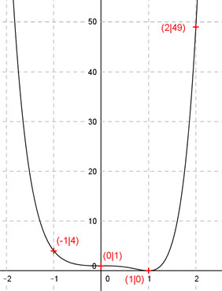

Aufgabe 109 Der Graph einer ganzrationalen Funktion 6. Grades geht durch die Punkte (-1|4) und (2|49), hat in (0|1) einen Wendepunkt mit waagerechter Tangente und in (1|0) einen Tiefpunkt. Wie lautet seine Funktionsgleichung?  Allgemeine Form einer ganzrationalen Funktion 6. Grades: f(x) = ax6 + bx5 + cx4 + dx3 + ex2 + fx + g f’(x) = 6ax5 + 5bx4 + 4cx3 + 3dx2 + 2ex + f f’’(x) = 30ax4 + 20bx3 + 12cx2 + 6dx + 2e 7 Bedingungen : 1. Hat in (0|1) einen Wendepunkt mit waagerechter Tangente (Sattelpunkt) bedeutet erstens: f(x) = 1 --> a * 06 + b * 05 + c * 04 + d * 03 + e * 02 + f * 0 + g = 1 --> g = 1 2. Hat in (0|1) einen Wendepunkt mit waagerechter Tangente (Sattelpunkt) bedeutet zweitens: f’(0) = 0 --> 6a * 05 + 5b * 04 + 4c * 03 + 3d * 02 + 2e * 0 + f = 0 --> f = 0 3. Hat in (0|1) einen Wendepunkt mit waagerechter Tangente (Sattelpunkt) bedeutet drittens: f’’(0) = 0 --> 30a * 04 + 20b * 03 + 12c * 02 + 6d * 0 + 2e = 0 --> 2e = 0 |:2 --> e = 0 4. Geht durch den Punkt (-1|4) bedeutet: (e = 0 und f = 0 und g = 1 eingesetzt) f(-1) = 4 --> a * (-1)6 + b * (-1)5 + c * (-1)4 + d * (-1)3 + 1 = 4 --> a - b + c - d + 1 = 4 |-1 a - b + c - d = 3 I 5. Geht durch den Punkt (2|49) bedeutet: (e = 0 und f = 0 und g = 1 eingesetzt) f(2) = 49 --> a * 26 + b * 25 + c * 24 + d * 23 + 1 = 49 --> 64a + 32b + 16c + 8d + 1 = 49 |-1 64a + 32b + 16c + 8d = 48 II 6. Hat in (1|0) einen Tiefpunkt bedeutet zum einen: (e = 0 und f = 0 und g = 1 eingesetzt) f(1) = 0 --> a * 16 + b * 15 + c * 14 + d * 13 + 1 = 0 --> a + b + c + d + 1 = 0 |-1 a + b + c + d = - 1 III 7. Hat in (1|0) einen Tiefpunkt bedeutet zum anderen: (e = 0 und f = 0 eingesetzt) f’(1) = 0 --> 6a * 15 + 5b * 14 + 4c * 13 + 3d * 12 = 0 --> 6a + 5b + 4c + 3d = 0 IV I + III a - b + c - d = 3 a + b + c + d = -1 ------------------- 2a + 2c = 2 V I * 8 + II 8a - 8b + 8c - 8d = 24 64a + 32b + 16c + 8d = 48 -------------------------- 72a + 24b + 24c = 72 VI III * (-3) + IV -3a - 3b - 3c - 3d = 3 6a + 5b + 4c + 3d = 0 ----------------------- 3a + 2b + c = 3 VII VI + VII * (-12) 72a + 24b + 24c = 72 -36a - 24b - 12c = -36 ----------------------- 36a + 12c = 36 VIII V * (-6) + VIII -12a - 12c = -12 36a + 12c = 36 ----------------- 24a = 24 |:24 a = 1 a = 1 in V eingesetzt: 2 * 1 + 2c = 2 2 + 2c = 2 |-2 2c = 0 |:2 c = 0 a = 1 und c = 0 in VII eingesetzt: 3 * 1 + 2b + 0 = 3 3 + 2b = 3 |-3 2b = 0 |:2 b = 0 a = 1 und c = 0 und b = 0 in III eingesetzt: 1 + 0 + 0 + d = -1 1 + d = -1 |-1 d = -2 Gesuchte Funktionsgleichung: f(x) = x6 - 2x3 + 1